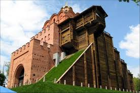

Назад
Золоті ворота
Золоті ворота були одними з трьох великих міських воріт, споруджених при Ярославі Мудрому. Будівництво воріт разом із Софійським собором згадується в «Повісті временних літ» у 1037 році[7]. Золоті ворота не згадуються у писемних джерелах у період після грудня 1240 року (монгольська навала) до XVI століття. Джерела XVI—XVII століть уже свідчать, що ворота перебувають у напівзруйнованому стані[2]. Мартін Ґруневеґ, львівський купець та мандрівник, писав 1584 року: Золоті ворота ще стоять, але переважна частина їх поруйнована…[8] Про це свідчать і малюнки голландського художника Абрагама ван Вестерфельда (1651). Золоті ворота за його часів ще мали арки, у проїзду було склепіння й збереглися рештки надбрамної церкви. Відомо, що у 1648 році саме біля Золотих воріт вітали Богдана Хмельницького після перемоги над польським військом[2]. Зважаючи на потребу захисту Києва від ворогів — спершу поляків, потім турків — у середині XVII ст. почалася реконструкція фортифікаційних споруд міста. Вали ввійшли до основи Старокиївської фортеці — дерев'яні оборонні споруди розібрали, земляні вали досипали і встановили гармати на верхніх майданчиках. Перед Золотими воротами було збудовано земляні бастіони й у них розмістили гарнізонну варту. Таким чином Золоті ворота служили для захисту міста у складі фортеці до середини XVIII століття, коли їх було визнано як небезпечні й засипано землею, щоб уберегти від руйнування[2]. З 20-х років XIX століття розпочалося археологічне дослідження Києва. Розкопку Золотих воріт було проведено у числі перших, і здійснено це було «складчиною з любителів священних старожитностей» (за підпискою)[2]. Оскільки 1832 року царем Миколою I руїни пам'ятки було визнано як «варті збереження», на їхні розкопки почали виділяти державні кошти із 1833 року. Дозвіл на археологічні розкопки надав київський генерал-губернатор Василь Левашов, а ініціатором виступив Кіндрат Лохвицький, археолог-аматор і чиновник з особливих доручень при генерал-губернаторові[2]. Стан воріт значно погіршився за час перебування під землею. Було розкрито дві паралельні стіни, довжина яких становила 25 метрів (східний пілон) і 13 метрів (західний), а висота була близько 8 метрів[2]. Сім пар пілястр було нараховано на внутрішніх поверхнях стін проїзду, а простір між пілястрами було прикрашено невеликими двоступінчастими нішами. Мурування воріт є схожим до Софійського собору — було використано змішану техніку («opus mixtum»), коли чергуються різні за розміром природні камені з рядами цегли (плінфи)[2]. 25 червня 1834 року (на день народження імператора) відбулося урочисте відкриття Золотих воріт — вони були освячені і «вілюміновані»[2]. Для збереження пам'ятки були потрібні заходи. Протягом 1835—1836 рр. верхню частину стін було залито вапняним розчином, а на руїни поклали дерен. 1837 року інженер Ф. Мєхович звів контрфорси біля східної стіни і з'єднав стіни залізними в'язями із кільцями[2]. Згодом провадилися роботи з укріплення руїн: на окремих ділянках зроблено ремонт стародавньої кладки, зведено контрфорси, влаштовано металеві зв'язки, територію навколо залишків пам'ятки оточено чавунною огорожею.
